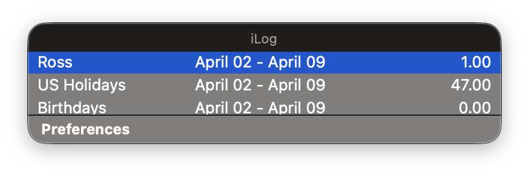
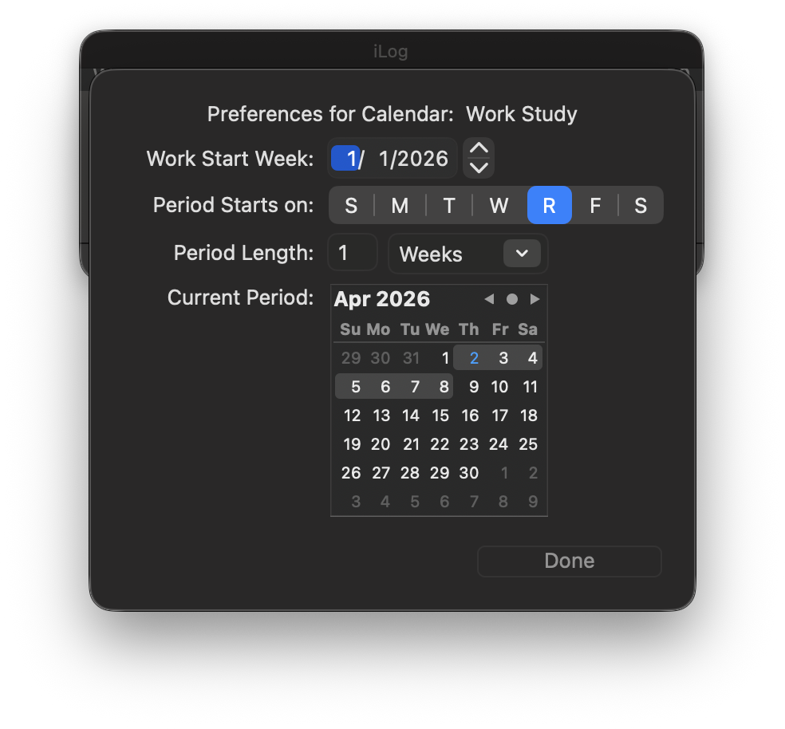

iLog
Super simple time tracking for Mac
In 2009 when I was a sophomore at Drexel University I had a friend who worked several part-time jobs. He found the task of adding up and logging his hours each week to be tedious and frustrating. He entered all his shifts into different calendars in iCal, but had to manually add up the hours each pay period. I was teaching myself Objective-C at the time and this seemed like a perfect challenge.
iLog pulls data from the macOS calendar API and produces a tally of hours logged in each calendar over a given period, which is adjustable in Preferences per calendar to account for different pay periods. It floats above other applications and across all spaces so that it can serve as a quick reference when entering hours into other applications or websites.
Building iLog was a crash course in integrating system APIs and UI components. More work ultimately went into the Preferences menu than the core concept because it involved so many controls. Previously I had only developed CLI apps, where the business logic is 99% of the code.

